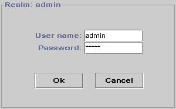

This document has the following sections:
First of all, you need the JDK1.2 to run JigAdmin, so make sure that you have downloaded it. If there is a no JDK1.2 available for you platform, use the old JigAdmin.
You just have to set your CLASSPATH.
# This depends on the shell you are using, we're assuming /bin/sh
UNIX
CLASSPATH=INSTDIR/Jigsaw/classes/jigsaw.jar:INSTDIR/Jigsaw/classes/jigadmin.jar:INSTDIR/Jigsaw/classes/sax.jar:INSTDIR/Jigsaw/classes/xp.jar
export CLASSPATH
Windows
set CLASSPATH=INSTDIR\Jigsaw\classes\jigsaw.zip;INSTDIR\Jigsaw\classes\jigadmin.jar;INSTDIR\Jigsaw\classes\sax.jar;INSTDIR\Jigsaw\classes\xp.jarThis is very easy in fact. The default configuration files provided by the default installation are designed to start two server, an instance of Jigsaw and one JigAdmin Server. The default port of JigAdmin Server is 8009. When you start the server with:
You must see, among the trace, this output:
Now that the administration server is running, you can access it with the following command:
The default root is your current directory, so if you are in the same directory where you started Jigsaw, you don't need the "-root" option. If you are running the administration server on the same machine, using the default port 8009, you don't need to provide an URL. The URL is the one of the administration server.
If you are not in the root directory, you can access the administration server with:
UNIX
java org.w3c.jigadmin.Main -root INSTDIR/Jigsaw/Jigsaw/
Windows
java org.w3c.jigadmin.Main -root INSTDIR\Jigsaw\Jigsaw\To access the administration server, you need to be authenticated for obvious reasons.

The realm used to access the server is "admin", the default user is "admin" and the default password is also "admin". After the first authentication, modify the user of the password or both to avoid unwanted changes to your server!
Now, JigAdmin is running!